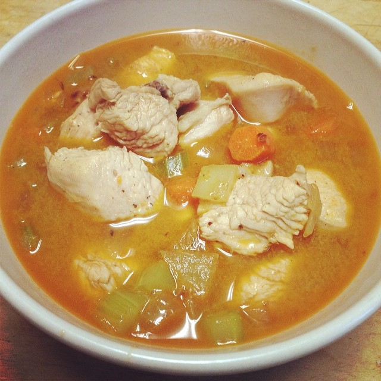

Odin recipes
Soulful Chicken Soup

Lucky for you, this slow cooker chicken soup recipe is about to become your new go-to.
Ingredients:
- 2 pounds bone-in chicken thighs, skinned and trimmed
- 3 medium carrots, cut into ½-inch pieces (1 ¼ cups)
- 1 celery root, cut into ½-inch pieces (2 cups)
- 1 medium leek, white and light green parts only, cleaned, chopped
- 2 garlic cloves, peeled and smashed
- 2 fresh thyme sprigs
- 2 fresh sage sprigs
- 1 fresh rosemary sprig
- 1 bay leaf
- 1 ½ teaspoons table salt
- 1 teaspoon freshly ground black pepper
- 8 cups chicken broth
- 2 cups wide egg noodles
- 3 tablespoons finely chopped fresh parsleyl
- 1 tablespoon fresh lemon juice
Steps:
- Place chicken and next 11 ingredients in a 6-qt. slow cooker. Cover and cook on LOW 6 hours or until chicken and vegetables are tender and chicken separates from bone.
- Remove chicken from slow cooker. Dice meat, discarding bones. Return meat to slow cooker. Stir in noodles and parsley. Cover and cook on HIGH 15 to 20 minutes or until noodles are tender. Stir in lemon juice. Serve immediately, and garnish with any leftover chopped fresh parsley.